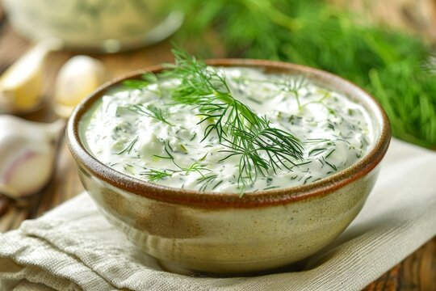

Tarator

Descrption
This is a bulgarian dish. Its principal ingredients are cucumber, yogurt and garlic
Ingredients
- 2 cucumbers
- 500g plain yogurt
- 4 garlic gloves
- 3 tablespoons of crushed walnuts
- A bunch of fresh dill
- Oil
- Salt
- Water
Steps
- Cut the cucumbers into cubes and put them in a bowl.
- Beat the yogurt with a fork until it gets liquida and pour it over the cucumbers.
- Add crushed garlic, the walnuts and the minced dill as well as salt and oil to tates.
If needed, add some water.- Put it to the refrigerator to cool or
add ice cubes.
- As revenge, serve cold.